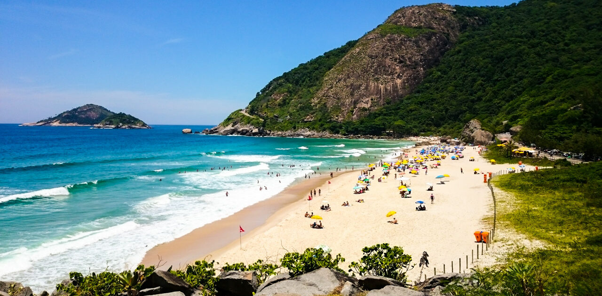
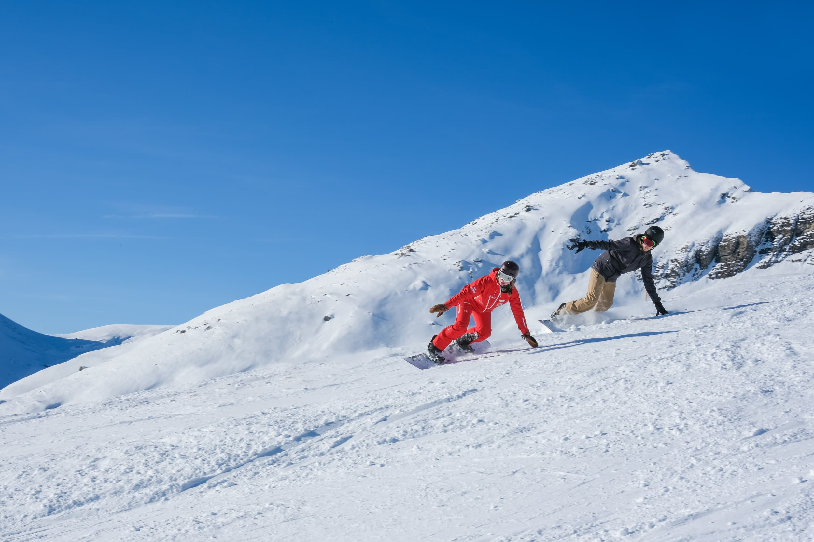

Relaxar
São Paulo > Prainha - RJ / (valor:R$2.500,00)
Localizada após o Recreio, oferece natureza preservadaáguas cristalinas e menos movimento, sendo um refúgio calmo.

Ida Volta
10/06/2026 17/06/2026
20:00 18:00
5h
GRU GIG
Desafiar-se
São Paulo > Zurique (valor: R$5.000.00)
Para quem ama aventura, a vida pede exploração, liberdade e superação de limites, saindo da zona de confortopara explorar turismo de aventura, como montanhas e selvas, indicamos Zurique na Suiça

ida Volta
29/04/2026 06/05/2026
14:00 15:00
11h30
GRU ZRH
Descobrir
São Paulo > Chiang Mai (valor: R$10.000,00)
Existe um lugar de muita cultura e espiritualidade, onde o budismo é praticado por cerca de 95% da populaçãocom uma culinária muito sofisticada, com diversos templos e de fortes culturas, esse lugar e Chiang Mai na Tailândia.
ida Volta
10/09/2026 17/09/2026
20:00 21:00
30h
GRU CNX